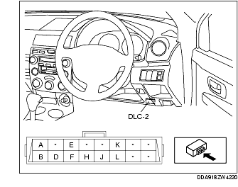
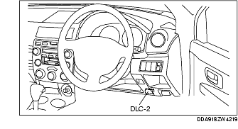

Auto leveling system initialization
Without Using WDS or Equivalent
If the initialization operation has never been implemented. (When the auto leveling control module is replaced.)
1. Turn the ignition switch to LOCK position.
- • Perform with the vehicle in an unloaded condition (no occupants; spare tire, jack and tools are in designated positions).
- • Perform the procedure in Steps 2 to 5 within 30 s.
2. Turn the ignition switch to the ON position.
3. Verify that the auto leveling system warning light flashes every 0.5 s.

- • If the auto leveling system warning light is illuminated after 15 s or more from the time since the ignition switch was turned to the ON position, one of the following malfunctions may have occurred. Repair or replace the malfunctioning part, then resume from Step 1.
- - Auto leveling sensor malfunction (See AUTO LEVELING SENSOR INSPECTION.)
- - PCM malfunction (See PCM INSPECTION [ZY].)
- - Auto leveling control module malfunction
- - Light switch malfunction (See LIGHT SWITCH INSPECTION.)
- - Related wiring harnesses malfunction
- • If the flashing of the auto leveling system warning light is not normal even though no malfunction other than in the auto leveling control module can be verified, replace the auto leveling control module.
4. Turn on the headlights.
5. Connect the data link connector-2 terminal B (INIT) to terminal J (GND) using a jumper wire.

6. Verify that the auto light system warning light flashes every 1 s.
- • If the auto light system warning light goes out, one of the following malfunctions may have occured. Repair or replace the malfunctioning part, then resume from Step 1.
- - Auto leveling sensor installation malfunction (See AUTO LEVELING SENSOR REMOVAL/INSTALLATION.)
- - Related wiring harnesses malfunction
- • If the auto light system warning light flashes every 0.5 s, it is possible that the procedure in Steps 2 to 5 was not completed within 30 s. Resume from Step 1.
7. Pull out the jumper wire from data link connector-2.
8. Verify that the auto leveling system warning light is not illuminated.
If the initialization operation has been implemented and the resetting procedure is to be performed.
1. Turn the ignition switch to LOCK position.
- • Perform with the vehicle in an unloaded condition (no occupants; spare tire, jack and tools are in designated positions).
- • Perform the procedure in Steps 2 to 5 within 30 s.
2. Turn the ignition switch to the ON position.
3. Verify that the auto leveling system warning light is not illuminated.

- • If the auto leveling system warning light is illuminated after 15 s or more from the time since the ignition switch was turned to the ON position, one of the following malfunctions may have occurred. Repair or replace the malfunctioning part, then resume from Step 1.
- - Auto leveling sensor malfunction (See AUTO LEVELING SENSOR INSPECTION.)
- - PCM malfunction (See PCM INSPECTION [ZY].)
- - Auto leveling control module malfunction
- - Light switch malfunction (See LIGHT SWITCH INSPECTION.)
- - Related wiring harnesses malfunction
- • If the flashing of the auto leveling system warning light is not normal even though no malfunction other than in the auto leveling control module can be verified, replace the auto leveling control module.
4. Turn on the headlights.
5. Connect the data link connector-2 terminal B (INIT) to terminal J (GND) using a jumper wire.

6. Verify that the auto light system warning light flashes every 1 s.
- • If the auto light system warning light goes out, one of the following malfunctions may have occured. Repair or replace the malfunctioning part, then resume from Step 1.
- - Auto leveling sensor installation malfunction (See AUTO LEVELING SENSOR REMOVAL/INSTALLATION.)
- - Related wiring harnesses malfunction
- • If it is possible that the procedure from Step 2 to Step 5 was not completed within 30 s, resume from Step 1.
7. Pull out the jumper wire from data link connector-2.
8. Verify that the auto leveling system warning light is not illuminated.
Using WDS or Equivalent
- • Perform with the vehicle in an unloaded condition (no occupants; spare tire, jack, and tools are in designated positions).
- • Perform the procedure in Step 5 within 30 s.
1. Connect the WDS or equivalent to the DLC-2.

2. Select 'Electrical' from the menu.
3. Select 'Exterior Lighting'.
4. Select 'Headlamp'.
5. Select `Auto Leveling Sensor ReZero Procedure' and perform the procedure as indicated on the screen.
6. Verify that the auto leveling warning light is not illuminated.

- • If the auto leveling warning light is flashing, it is possible that the procedure in Step 5 was not completed within 30 s. Resume from Step 1.
- • If the auto leveling system warning light is flashing even though the procedure in Step 5 was completed within 30 s, one of the following malfunctions may have occured. Repair or replace the malfunctioning part, then resume from Step 1.
- - Auto leveling sensor installation malfunction (See AUTO LEVELING SENSOR REMOVAL/INSTALLATION.)
- - Related wiring harnesses malfunction
- • If the auto leveling system warning light is illuminated, one of the following malfunctions may have occured. Repair or replace the malfunctioning part, then resume from Step 1.
- - Auto leveling sensor malfunction (See AUTO LEVELING SENSOR INSPECTION.)
- - PCM malfunction (See PCM INSPECTION [ZY].)
- - Auto leveling control module malfunction
- - Light switch malfunction (See LIGHT SWITCH INSPECTION.)
- - Related wiring harnesses malfunction
- • If the flashing of the auto leveling system warning light is not normal even though no malfunction other than in the auto leveling control module can be verified, replace the auto leveling control module.